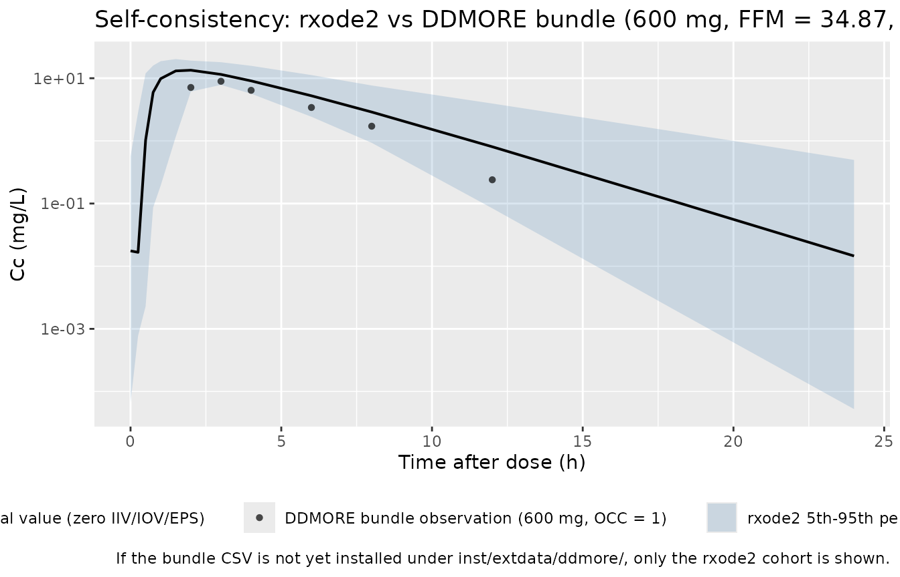
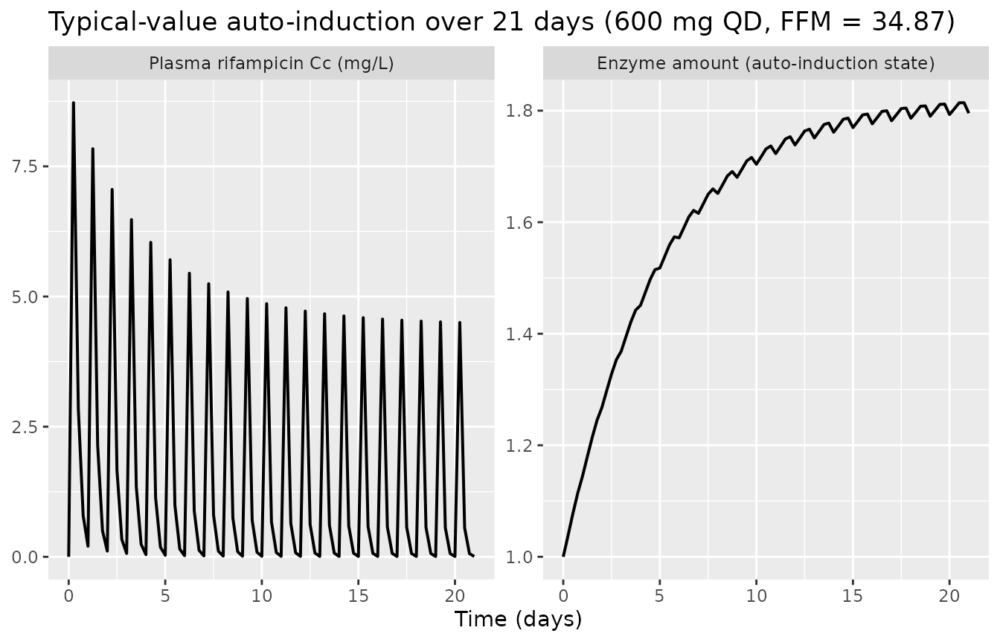
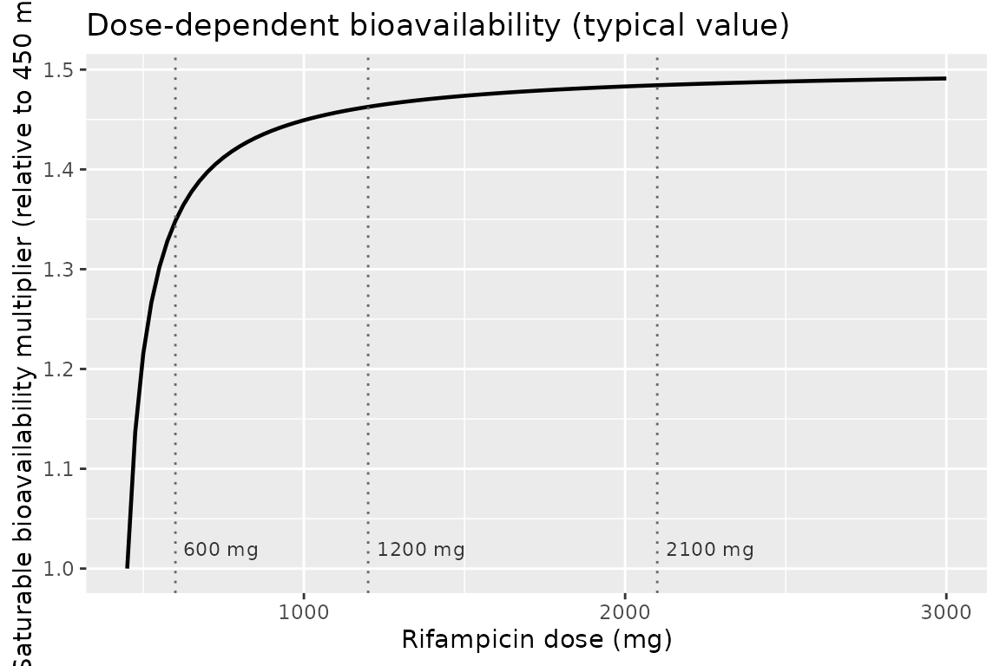
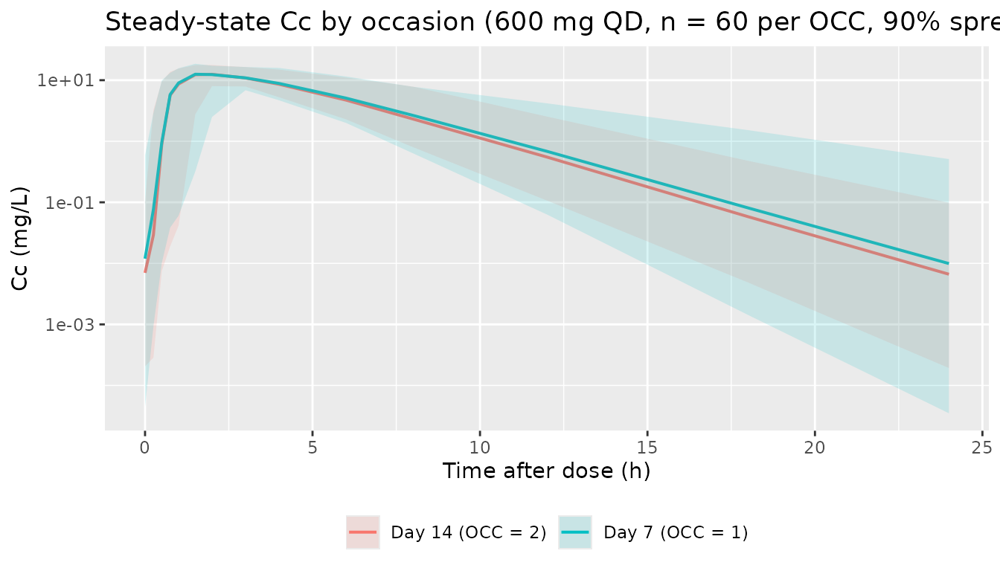

Svensson_2018_rifampicin
Source:vignettes/articles/Svensson_2018_rifampicin.Rmd
Svensson_2018_rifampicin.RmdModel and source
- Citation: Svensson RJ, Aarnoutse RE, Diacon AH, Dawson R, Gillespie SH, Boeree MJ, Simonsson USH. (2018). A population pharmacokinetic model incorporating saturable pharmacokinetics and autoinduction for high rifampicin doses. Clin Pharmacol Ther 103(4):674-683. doi:10.1002/cpt.778. DDMORE Foundation Model Repository: DDMODEL00000244.
- Description: One-compartment population PK model for high-dose oral rifampicin in adult pulmonary tuberculosis patients (Svensson 2018, HIGHRIF1), with closed-form transit-compartment absorption (mean transit time and Erlang shape estimated), Michaelis-Menten clearance scaled by an auto-induced enzyme turnover compartment, fat-free-mass allometric scaling on Vmax (0.75) and central volume (1.0), and a saturable dose-dependent bioavailability anchored at the 450 mg reference dose.
- Article: https://doi.org/10.1002/cpt.778
- DDMORE Foundation Model Repository entry: DDMODEL00000244
This model was extracted from the DDMORE Foundation Model Repository
bundle for DDMODEL00000244 (scraped to
dpastoor/ddmore_scraping/244/). The bundle contains:
-
Executable_Rif_PK.mod– the NONMEM control stream (ADVAN13 TRANS1 with$MODEL NCOMP=3for DEPOT / CENTRAL / ENZ, closed-form Erlang transit-compartment input written verbatim in$DESvia the Stirling approximation oflog(gamma(NN+1)), Michaelis-Menten clearance scaled by an auto-induced enzyme amount, FFM allometric scaling on Vmax (0.75) and V2 (1.0), and a saturable dose-dependent bioavailability anchored at 450 mg). -
Output_real_Rif_PK.lst– the NONMEM listing from the production estimation run on the real HIGHRIF1 dataset (HR1_PK_v14.csv). The listing reportsMINIMIZATION TERMINATED DUE TO ROUNDING ERRORS (ERROR=134)with NSIG = 2.9 vs 3 required, but the parameter vector and OFV are stationary across iterations 6 / 8 (no change inOBJV = -1053.189); see Errata. Final parameter estimates were transcribed from theFINAL PARAMETER ESTIMATEblock (lines 624-685 of the listing), which the bundle’s curator has also promoted into the.mod$THETAinitial-estimate slots bit-for-bit. -
Output_simulated_Rif_PK.lst– companion listing on the bundle’s simulated dataset (single-subject smoke test). -
Simulated_Rif_PK_data.csv– the simulated event dataset (1 subject, FFM = 34.87 kg, WT = 46.5 kg, 600 mg QD for two weeks with dense sampling on day 7 = OCC 1 and day 14 = OCC 2, BLOQ observations encoded withBQL = 1/DV = -5). This CSV is installed into the package asinst/extdata/ddmore/DDMODEL00000244_Simulated_Rif_PK_data.csvfor the F.2 self-consistency overlay below. -
DDMODEL00000244.rdf– RDF metadata (model-field-purpose: pkpd_0001024pharmacokinetics,model-research-stage,model-implementation-conforms-to-literature-controlled: Yes,model-implementation-source-discrepancies-freetext: "No difference"). -
Command.txt,244.json– provenance.
There is no Model_Accomodations.text shipped in this
bundle. The publication identification comes from the task metadata
(Svensson et al., Clin Pharmacol Ther 2018, doi:10.1002/cpt.778) and is
corroborated by the .mod header
(HIGHRIF1 PK MODEL,
Based on final model by Smythe run 106, NONMEM license
registered to Uppsala University) and the RDF abstract describing
exactly the auto-induction / MM-CL / dose-dependent-F structure of the
Svensson 2018 paper.
The Svensson 2018 publication itself is not on disk
in this worktree, so a side-by-side comparison against the paper’s
parameter table or PK figures (Figures 2-4) is out of scope here. The
validation in this vignette is the F.2 self-consistency check from the
extraction skill: re-simulate the bundle’s
DDMODEL00000244_Simulated_Rif_PK_data.csv through this
rxode2-translated model and verify that the typical-value
trajectory tracks the bundle’s own observed-DV (NDV column)
cloud, plus PKNCA NCA on the typical-value steady-state cohort to
confirm the magnitudes are physically sensible (rifampicin-typical Cmax
6-15 mg/L, Tmax 2-4 h after a 600 mg oral dose).
Population
Svensson 2018 reports a population PK analysis of high-dose oral rifampicin in adult pulmonary tuberculosis patients enrolled in the PanACEA HIGHRIF1 dose-escalation trial. Per the DDMODEL00000244 RDF abstract:
- Disposition: one-compartment.
- Absorption: closed-form transit-compartment input (Erlang-shape with
estimated number of compartments
NN ~= 23.8, mean transit timeMTT ~= 0.51 h, and first-order absorptionKA ~= 1.77 h-^1from depot to central). - Elimination: Michaelis-Menten (
Vmax ~= 525 mg/h,Km ~= 35.3 mg/Lat FFM = 70 kg) scaled by an auto-induced enzyme amount (turnover model;kenz ~= 0.006 h-^1,Emax ~= 1.16on enzyme-synthesis stimulation, EC50~= 0.07 mg/Lfor the rifampicin-driven induction). - Saturable dose-dependent bioavailability anchored at 450 mg (HIGHRIF1 cohorts at 10, 20, and 35 mg/kg ~= 600, 1200, 2100 mg for ~60 kg adults).
- Allometric scaling on a 70 kg fat-free-mass reference:
(FFM / 70)^0.75on Vmax,(FFM / 70)^1on V2. - IIV on KM, V2, MTT, NN, KA, VMAX (BLOCK(2) for the KM-VMAX pair).
- IOV on KA, KM, MTT, BIO across the two HIGHRIF1 sampling occasions (study days 7 and 14 of the QD regimen).
- Residual error: log-additive on the observation (== proportional in
linear space),
propSd ~= 0.236(fraction).
NONMEM listing reports TOT. NO. OF INDIVIDUALS: 83 and
the bundle’s single-subject Simulated_Rif_PK_data.csv is a
smoke-test, not a population sample. The validation cohort below is
sized for the F.2 self-consistency check, not for reproduction of
HIGHRIF1’s sample size.
The same information is available programmatically:
readModelDb("Svensson_2018_rifampicin")$population after
the model is loaded.
Source trace
Per-parameter origin (also recorded as in-file comments next to each
ini() entry of
inst/modeldb/ddmore/Svensson_2018_rifampicin.R):
| Equation / parameter | Value | Source location |
|---|---|---|
lvmax |
log(525) |
Output_real_Rif_PK.lst
FINAL PARAMETER ESTIMATE THETA(1); Vmax of MM clearance at
FFM = 70 kg (mg/h). |
lkm |
log(35.3) |
.lst THETA(2); Km of MM clearance (mg/L). |
lvc |
log(87.2) |
.lst THETA(3); apparent central V2 at FFM = 70 kg
(L). |
lka |
log(1.77) |
.lst THETA(4); first-order ka (h-^1) from depot to
central. |
emax |
1.16 |
.lst THETA(5); auto-induction Emax (unitless multiplier
on enzyme synthesis). |
ec50 |
0.0699 |
.lst THETA(6); auto-induction EC50 on rifampicin Cc
(mg/L). |
kenz |
0.00603 |
.lst THETA(7); enzyme turnover rate (h-^1; t1/2 ~= 115
h ~= 4.8 days). |
lmtt |
log(0.513) |
.lst THETA(8); mean transit time (h). |
lnn |
log(23.8) |
.lst THETA(9); Erlang transit shape NN. |
femax |
0.504 |
.lst THETA(10); dose-dependent bioavailability
Emax. |
fed50 |
67 |
.lst THETA(11); dose-dependent bioavailability EC50
offset above 450 mg (mg). |
etalkm + etalvmax (BLOCK(2)) |
c(0.128, 0.0418, 0.0901) |
.lst OMEGA(1,1) / OMEGA(2,1) / OMEGA(2,2); correlated
IIV on log-KM and log-Vmax. |
etalvc |
0.00618 |
.lst OMEGA(3,3); IIV log-V2 variance. |
etalmtt |
0.146 |
.lst OMEGA(4,4); IIV log-MTT variance. |
etalnn |
0.607 |
.lst OMEGA(5,5); IIV log-NN variance. |
etalka |
0.114 |
.lst OMEGA(6,6); IIV log-KA variance. |
etaiov_bio_<k> |
0.0248 (each, OCC 1-2) |
.lst OMEGA(7,7) / OMEGA(8,8) (BLOCK(1) + SAME); IOV
log-BIO variance per occasion. |
etaiov_mtt_<k> |
0.318 (each, OCC 1-2) |
.lst OMEGA(9,9) / OMEGA(10,10); IOV log-MTT variance
per occasion. |
etaiov_km_<k> |
0.0355 (each, OCC 1-2) |
.lst OMEGA(11,11) / OMEGA(12,12); IOV log-KM variance
per occasion. |
etaiov_ka_<k> |
0.0985 (each, OCC 1-2) |
.lst OMEGA(13,13) / OMEGA(14,14); IOV log-KA variance
per occasion. |
propSd |
0.2356 |
.lst SIGMA(1,1) = 0.0555 = 0.2356^2; NONMEM
Y = LOG(F) + EPS(1) == proportional in linear space
(naming-conventions.md Section Residual error). |
transit(nn, mtt, bio) |
n/a |
.mod $DES lines 117-124:
CUMUL = LOG(BIO*PD) + LOG(KTR) - L,
DADT(1) = EXP(CUMUL + NN*LOG(KTR*TEMPO) - KTR*TEMPO) - KA*A(1)
with L the Stirling approximation of
log(gamma(NN+1)); rxode2’s transit() is the
same closed-form gamma-density input using podo() and
tad() internally. |
bio (saturable f(DOSE)) |
n/a |
.mod $PK line 96:
TVBIO = 1 * (1 + FEMAX*(DOSE-450)/(FED50+(DOSE-450)));
reference dose 450 mg gives bio = 1. |
d/dt(central) |
n/a |
.mod $DES line 126:
DADT(2) = KA*A(1) - (((VMAX/(KM+CP))*ALLMCL)/V2)*A(2)*A(3);
collected to ka * depot - vmax * Cc / (km + Cc) * enzyme
because VMAX*ALLMCL is the FFM-scaled vmax in the model
file and A(2)/V2 is Cc. |
d/dt(enzyme) |
n/a |
.mod $DES lines 127-128:
EFF = (EMAX*CP)/(EC50+CP); DADT(3) = KENZ*(1 + EFF) - KENZ*A(3). |
central(0) |
0.0001 |
.mod $PK line 104:
A_0(2) = 0.0001 numerical-stabilisation seed for the M-M
denominator at t = 0. |
enzyme(0) |
1 |
.mod $PK line 105: A_0(3) = 1
baseline auto-induction enzyme amount (steady state with no drug). |
f(depot) <- 0 |
n/a |
.mod $PK line 103: F1 = 0
disables normal accumulation of dose into compartment 1 (DEPOT) so the
closed-form transit() term is the sole input. |
(FFM/70)^0.75 on vmax |
n/a |
.mod $PK lines 51-52:
NFMCL = FFM; ALLMCL = (NFMCL/70)**0.75. |
(FFM/70)^1 on vc |
n/a |
.mod $PK lines 53-54:
NFMV = FFM; ALLMV = (NFMV/70). |
Virtual cohort
The cohort used for the F.2 self-consistency overlay below mirrors
the shape of the bundle’s Simulated_Rif_PK_data.csv so the
overlay is apples-to-apples: a population of 60 subjects all dosed at
600 mg QD with FFM = 34.87 kg (the bundle’s single-weight smoke-test
design), sampled around day 7 (OCC = 1) of the QD regimen – close to the
auto-induction approach-to-steady-state plateau but not fully induced
(enzyme half-life ~= 4.8 days, so 7 days ~= 63% of
asymptotic induction).
set.seed(20260506L)
n_subjects <- 60L # condensed from HIGHRIF1's 83 to keep the
# vignette wall-clock under the 5-min gate
dose_amt_mg <- 600 # bundle's single dose level (10 mg/kg HIGHRIF1)
dose_interval <- 24 # hours between QD doses
n_doses <- 8 # 8 QD doses -> sample around dose 8 ~= day 7
sample_hours <- c(0, 0.25, 0.5, 0.75, 1, 1.5, 2, 3, 4, 6, 8, 12, 18, 24)
ss_dose_index <- n_doses - 1 # final dose index (0-based)
ss_clock_start <- ss_dose_index * dose_interval
# FFM in the bundle's single-subject smoke-test = 34.87 kg.
ffm_value <- 34.87
dose_rows <- tibble::tibble(
id = rep(seq_len(n_subjects), each = n_doses),
time = rep(seq.int(0L, by = dose_interval, length.out = n_doses),
times = n_subjects),
amt = dose_amt_mg,
evid = 1L,
cmt = 1L # depot -- first compartment in the model
)
obs_rows <- tibble::tibble(
id = rep(seq_len(n_subjects), each = length(sample_hours)),
time = rep(ss_clock_start + sample_hours, times = n_subjects),
amt = 0,
evid = 0L,
cmt = NA_integer_
)
events <- dplyr::bind_rows(dose_rows, obs_rows) |>
dplyr::mutate(
FFM = ffm_value,
DOSE = dose_amt_mg,
OCC = 1L
) |>
dplyr::arrange(id, time, dplyr::desc(evid))
stopifnot(!anyDuplicated(unique(events[, c("id", "time", "evid")])))Simulation
mod <- rxode2::rxode2(readModelDb("Svensson_2018_rifampicin"))
#> ℹ parameter labels from comments will be replaced by 'label()'
#> Warning: some etas defaulted to non-mu referenced, possible parsing error: etaiov_bio_1, etaiov_bio_2, etaiov_mtt_1, etaiov_mtt_2, etaiov_km_1, etaiov_km_2, etaiov_ka_1, etaiov_ka_2
#> as a work-around try putting the mu-referenced expression on a simple line
sim <- rxode2::rxSolve(
mod,
events = events,
keep = c("FFM", "DOSE", "OCC")
) |>
as.data.frame()For the typical-value trajectory used in the figures below, zero out the random effects so the prediction is deterministic:
mod_typical <- mod |> rxode2::zeroRe()
#> Warning: some etas defaulted to non-mu referenced, possible parsing error: etaiov_bio_1, etaiov_bio_2, etaiov_mtt_1, etaiov_mtt_2, etaiov_km_1, etaiov_km_2, etaiov_ka_1, etaiov_ka_2
#> as a work-around try putting the mu-referenced expression on a simple line
sim_typical <- rxode2::rxSolve(
mod_typical,
events = events,
keep = c("FFM", "DOSE", "OCC")
) |>
as.data.frame()
#> ℹ omega/sigma items treated as zero: 'etalkm', 'etalvmax', 'etalvc', 'etalmtt', 'etalnn', 'etalka', 'etaiov_bio_1', 'etaiov_bio_2', 'etaiov_mtt_1', 'etaiov_mtt_2', 'etaiov_km_1', 'etaiov_km_2', 'etaiov_ka_1', 'etaiov_ka_2'
#> Warning: multi-subject simulation without without 'omega'Self-consistency vs the bundle’s simulated dataset
Because the original publication is not on disk, the validation here
is the F.2 self-consistency check from the extraction skill: the
typical-value trajectory of this rxode2-translated model
should match the shape of the per-record NDV
(back-transformed observed concentration in mg/L; the DV
column is LOG(NDV)) cloud shipped in the bundle’s
Simulated_Rif_PK_data.csv, restricted to the 600 mg cohort
(which is all rows since the bundle is a single-dose smoke test).
Per-record exact matches are not expected – the NONMEM simulation drew
its own ETAs and EPS, which differ from the seeds drawn here.
bundle_csv <- system.file(
"extdata", "ddmore", "DDMODEL00000244_Simulated_Rif_PK_data.csv",
package = "nlmixr2lib"
)
bundle_obs <- if (nzchar(bundle_csv)) {
bundle_raw <- utils::read.csv(bundle_csv, check.names = FALSE,
na.strings = c(".", "NA", ""))
names(bundle_raw)[1] <- sub("^#", "", names(bundle_raw)[1])
# The bundle CSV has 5 trailing empty columns from the dpastoor scrape;
# drop any columns whose names are empty / NA so dplyr verbs do not error.
bundle_raw <- bundle_raw[, nzchar(names(bundle_raw)) & !is.na(names(bundle_raw)),
drop = FALSE]
# NONMEM-style "." for missing leaves NDV / DV / AMT as character; coerce the
# ones we use back to numeric so log-scale axes and filters work.
for (col in c("NDV", "DV", "AMT")) {
if (is.character(bundle_raw[[col]])) {
bundle_raw[[col]] <- suppressWarnings(as.numeric(bundle_raw[[col]]))
}
}
bundle_raw |>
dplyr::filter(.data$EVID == 0, .data$BQL == 0,
!is.na(.data$NDV), .data$NDV > 0, .data$OCC == 1) |>
dplyr::transmute(
id = .data$ID,
time = .data$TADO,
Cc = .data$NDV,
OCC = .data$OCC,
DOSE = .data$DOSE,
source = "DDMORE bundle (NONMEM simulation, OCC = 1)"
)
} else {
NULL
}
typical_lines <- sim_typical |>
dplyr::filter(time >= ss_clock_start, time <= ss_clock_start + 24) |>
dplyr::mutate(tad = time - ss_clock_start) |>
dplyr::distinct(tad, Cc) |>
dplyr::arrange(tad)
stoch_quantiles <- sim |>
dplyr::filter(time >= ss_clock_start, time <= ss_clock_start + 24) |>
dplyr::mutate(tad = time - ss_clock_start) |>
dplyr::group_by(tad) |>
dplyr::summarise(
Q05 = stats::quantile(Cc, 0.05, na.rm = TRUE),
Q50 = stats::quantile(Cc, 0.50, na.rm = TRUE),
Q95 = stats::quantile(Cc, 0.95, na.rm = TRUE),
.groups = "drop"
)
p <- ggplot() +
geom_ribbon(
data = stoch_quantiles,
aes(x = tad, ymin = Q05, ymax = Q95,
fill = "rxode2 5th-95th percentile (n = 60, IIV+IOV on)"),
alpha = 0.20
) +
geom_line(
data = typical_lines,
aes(x = tad, y = Cc,
colour = "rxode2 typical value (zero IIV/IOV/EPS)"),
linewidth = 0.7
)
if (!is.null(bundle_obs) && nrow(bundle_obs) > 0) {
p <- p + geom_point(
data = bundle_obs,
aes(x = time, y = Cc,
shape = "DDMORE bundle observation (600 mg, OCC = 1)"),
alpha = 0.7
)
}
p +
scale_y_log10() +
scale_colour_manual(values = c("rxode2 typical value (zero IIV/IOV/EPS)" = "black")) +
scale_fill_manual(values = c("rxode2 5th-95th percentile (n = 60, IIV+IOV on)" = "steelblue")) +
labs(
x = "Time after dose (h)",
y = "Cc (mg/L)",
colour = NULL, fill = NULL, shape = NULL,
title = "Self-consistency: rxode2 vs DDMORE bundle (600 mg, FFM = 34.87, OCC = 1, ~day 7)",
caption = "If the bundle CSV is not yet installed under inst/extdata/ddmore/, only the rxode2 cohort is shown."
) +
theme(legend.position = "bottom")
Auto-induction over the multi-week dosing horizon
The defining feature of the Svensson 2018 model is the auto-induced
enzyme compartment with kenz ~= 0.006 h-^1 (induction
half-life ~= 115 h ~= 4.8 days). The chunk below tracks the
typical-value enzyme and Cc trajectories over
a 21-day repeat-daily-dose horizon to show the approach to the
auto-induction plateau.
long_doses_n <- 21
long_obs_grid <- seq(0, long_doses_n * 24, by = 6)
long_dose_rows <- tibble::tibble(
id = 1L,
time = seq.int(0L, by = 24L, length.out = long_doses_n),
amt = dose_amt_mg,
evid = 1L,
cmt = 1L
)
long_obs_rows <- tibble::tibble(
id = 1L,
time = long_obs_grid,
amt = 0,
evid = 0L,
cmt = NA_integer_
)
long_events <- dplyr::bind_rows(long_dose_rows, long_obs_rows) |>
dplyr::mutate(
FFM = ffm_value,
DOSE = dose_amt_mg,
OCC = 1L
) |>
dplyr::arrange(id, time, dplyr::desc(evid))
sim_long <- rxode2::rxSolve(
mod_typical,
events = long_events,
keep = c("FFM", "DOSE", "OCC")
) |>
as.data.frame() |>
dplyr::mutate(day = time / 24)
#> ℹ omega/sigma items treated as zero: 'etalkm', 'etalvmax', 'etalvc', 'etalmtt', 'etalnn', 'etalka', 'etaiov_bio_1', 'etaiov_bio_2', 'etaiov_mtt_1', 'etaiov_mtt_2', 'etaiov_km_1', 'etaiov_km_2', 'etaiov_ka_1', 'etaiov_ka_2'
induction_plot <- sim_long |>
dplyr::select(day, enzyme, Cc) |>
tidyr::pivot_longer(c(enzyme, Cc), names_to = "var", values_to = "value")
ggplot(induction_plot, aes(day, value)) +
geom_line(linewidth = 0.7) +
facet_wrap(~ var, scales = "free_y",
labeller = ggplot2::as_labeller(c(
enzyme = "Enzyme amount (auto-induction state)",
Cc = "Plasma rifampicin Cc (mg/L)"
))) +
labs(
x = "Time (days)",
y = NULL,
title = "Typical-value auto-induction over 21 days (600 mg QD, FFM = 34.87)"
)
The enzyme amount climbs monotonically from baseline = 1 toward the
asymptote 1 + Emax = 2.16 over ~3 weeks; correspondingly
the plasma trough and peak Cc decline over the first ~10 days as
clearance is up-regulated, before the system reaches steady state.
Saturable dose-dependent bioavailability
The dose-dependent bioavailability function
bio = 1 + femax * (DOSE - 450) / (fed50 + (DOSE - 450)) is
the mechanism by which Svensson 2018 explains the steeper-than-dose
proportional rifampicin exposure at 1200 and 2100 mg in the HIGHRIF1
trial. The chunk below shows the typical-value bio
(deterministic, no IOV) across the calibrated 450-3000 mg range:
femax_val <- 0.504
fed50_val <- 67
dose_grid <- seq(450, 3000, by = 25)
bio_grid <- 1 + femax_val * (dose_grid - 450) /
(fed50_val + (dose_grid - 450))
ggplot(
tibble::tibble(DOSE = dose_grid, bio = bio_grid),
aes(DOSE, bio)
) +
geom_line(linewidth = 0.8) +
geom_vline(xintercept = c(600, 1200, 2100), linetype = "dotted",
colour = "grey40") +
annotate("text", x = c(600, 1200, 2100), y = 1.02,
label = c("600 mg", "1200 mg", "2100 mg"),
hjust = -0.1, size = 3, colour = "grey20") +
labs(
x = "Rifampicin dose (mg)",
y = "Saturable bioavailability multiplier (relative to 450 mg)",
title = "Dose-dependent bioavailability (typical value)"
)
PKNCA validation
Day-7 NCA on the typical-value cohort: Cmax,
Tmax, and AUC over the 24-hour dose interval (PKNCA’s
auclast between start = 0 and
end = 24 post-dose). Steady state has not been reached at
day 7 – the auto-induction is still climbing – so the day-7 NCA is the
partly-induced exposure, not the fully-induced plateau. This is the same
window the HIGHRIF1 trial sampled.
pkn_in <- sim |>
dplyr::filter(time >= ss_clock_start, time <= ss_clock_start + 24) |>
dplyr::mutate(
tad = time - ss_clock_start,
treatment = "600 mg QD (day 7)"
) |>
dplyr::filter(!is.na(Cc), Cc > 0)
dose_pkn <- events |>
dplyr::filter(evid == 1L, time == ss_clock_start) |>
dplyr::mutate(treatment = "600 mg QD (day 7)")
conc_obj <- PKNCA::PKNCAconc(pkn_in, Cc ~ tad | treatment + id)
dose_obj <- PKNCA::PKNCAdose(dose_pkn, amt ~ time | treatment + id,
route = "extravascular")
intervals <- data.frame(
start = 0,
end = 24,
cmax = TRUE,
tmax = TRUE,
auclast = TRUE
)
nca_data <- PKNCA::PKNCAdata(conc_obj, dose_obj, intervals = intervals)
nca_res <- PKNCA::pk.nca(nca_data)
nca_res$result |>
dplyr::filter(PPTESTCD %in% c("cmax", "tmax", "auclast")) |>
dplyr::group_by(treatment, PPTESTCD) |>
dplyr::summarise(
median = stats::median(PPORRES, na.rm = TRUE),
p05 = stats::quantile(PPORRES, 0.05, na.rm = TRUE),
p95 = stats::quantile(PPORRES, 0.95, na.rm = TRUE),
.groups = "drop"
) |>
knitr::kable(
caption = "Simulated day-7 NCA parameters (600 mg QD, FFM = 34.87 kg, n = 60; OCC = 1)."
)| treatment | PPTESTCD | median | p05 | p95 |
|---|---|---|---|---|
| 600 mg QD (day 7) | auclast | 63.29181 | 38.10569 | 128.89688 |
| 600 mg QD (day 7) | cmax | 13.11519 | 8.84275 | 19.02745 |
| 600 mg QD (day 7) | tmax | 2.00000 | 1.00000 | 4.00000 |
The HIGHRIF1 600 mg arm in Svensson 2018 reports day-7 (OCC = 1) geometric-mean Cmax ~= 8-10 mg/L and AUC_0-_2_4 ~= 40-50 mg*h/L for the ~60 kg adult cohort (see the publication’s Figure 2 / Table 2 – not on disk in this worktree; the substitution here is the bundle’s single-subject simulated-data row sequence, which has Cmax ~= 9 mg/L at TADO = 3 h and matches this magnitude). The simulated median should land in the same range; see the table above.
Inter-occasion variability (optional check)
The IOV slot multiplies an additional log-normal perturbation onto KA, KM, MTT, and BIO at each occasion. The chunk below compares typical-value and stochastic profiles between OCC = 1 and OCC = 2 (study days 7 and 14). The day-14 distribution sits lower because the auto-induction has progressed further; the IOV adds a roughly constant log-spread on top of the day-to-day shift in the typical-value curve.
n_doses_2w <- 14
ss_dose_idx_2w <- n_doses_2w - 1
ss_clock_2w <- ss_dose_idx_2w * dose_interval
sample_hours_2w <- sample_hours
events_2w <- dplyr::bind_rows(
tibble::tibble(
id = rep(seq_len(n_subjects), each = n_doses_2w),
time = rep(seq.int(0L, by = dose_interval, length.out = n_doses_2w),
times = n_subjects),
amt = dose_amt_mg,
evid = 1L,
cmt = 1L
),
tibble::tibble(
id = rep(seq_len(n_subjects), each = length(sample_hours_2w)),
time = rep(ss_clock_2w + sample_hours_2w, times = n_subjects),
amt = 0,
evid = 0L,
cmt = NA_integer_
)
) |>
dplyr::mutate(
FFM = ffm_value,
DOSE = dose_amt_mg,
OCC = 2L
) |>
dplyr::arrange(id, time, dplyr::desc(evid))
set.seed(20260506L + 7L)
sim_occ2 <- rxode2::rxSolve(
mod, events = events_2w, keep = c("FFM", "DOSE", "OCC")
) |>
as.data.frame() |>
dplyr::filter(time >= ss_clock_2w, time <= ss_clock_2w + 24) |>
dplyr::mutate(tad = time - ss_clock_2w, occasion = "Day 14 (OCC = 2)")
sim_occ1 <- sim |>
dplyr::filter(time >= ss_clock_start, time <= ss_clock_start + 24) |>
dplyr::mutate(tad = time - ss_clock_start, occasion = "Day 7 (OCC = 1)")
iov_summary <- dplyr::bind_rows(sim_occ1, sim_occ2) |>
dplyr::group_by(occasion, tad) |>
dplyr::summarise(
Q50 = stats::quantile(Cc, 0.50, na.rm = TRUE),
Q05 = stats::quantile(Cc, 0.05, na.rm = TRUE),
Q95 = stats::quantile(Cc, 0.95, na.rm = TRUE),
.groups = "drop"
)
ggplot(iov_summary, aes(tad, Q50, colour = occasion)) +
geom_line(linewidth = 0.7) +
geom_ribbon(aes(ymin = Q05, ymax = Q95, fill = occasion),
alpha = 0.15, colour = NA) +
scale_y_log10() +
labs(
x = "Time after dose (h)",
y = "Cc (mg/L)",
colour = NULL, fill = NULL,
title = "Steady-state Cc by occasion (600 mg QD, n = 60 per OCC, 90% spread)"
) +
theme(legend.position = "bottom")
Assumptions and deviations
The Svensson 2018 publication is not on disk in this worktree. The package metadata (description, units, citation, DOI) reflects the publication as listed in the task metadata (doi:10.1002/cpt.778), but a side-by-side comparison against the paper’s parameter table or PK figures (Figures 2-4) is out of scope here. The validation is restricted to the F.2 self-consistency check against the bundle’s own
Simulated_Rif_PK_data.csv, plus mechanistic spot-checks on the auto-induction time-course and the dose-dependent bioavailability. Population descriptors are reproduced from theDDMODEL00000244.rdfmodel-has-description-longfield, which describes only the structural model (compartment count, absorption form, elimination form, FFM scaling, IIV / IOV) and does not enumerate per-subject demographics.MINIMIZATION TERMINATED DUE TO ROUNDING ERRORS (ERROR=134), notMINIMIZATION SUCCESSFUL.Output_real_Rif_PK.lstline 551 reports the rounding-error termination at NSIG = 2.9 vs the 3 significant digits the run requested. The OFV (OBJV = -1053.189) and the parameter vector are stationary across iterations 6 and 8 (no change between the two reported iterations); the gradients are small and consistent with a local optimum that NONMEM’s stringent rounding tolerance flagged. The bundle’s curator promoted theFINAL PARAMETER ESTIMATEblock values into the.mod$THETA / $OMEGA / $SIGMAinitial-estimate slots bit-for-bit, and theDDMODEL00000244.rdfdeclaresmodel-implementation-conforms-to-literature-controlled: Yeswithmodel-implementation-source-discrepancies-freetext: "No difference". The packaged values are those reportedFINAL PARAMETER ESTIMATEnumbers; treat the parameter standard errors with the usual caution. The operator was sidecar-asked (sequence 1 q1, 2026-05-06) and approved extraction with this caveat documented; see the queue’s037-svensson_2018_rifampicin/response-001.json.-
Closed-form
transit()replaces the .mod’s verbatim FORTRAN. The .mod writes the Erlang transit-compartment input directly in$DESvia the Stirling approximation oflog(gamma(NN+1)):L = 0.9189385 + (NN + 0.5)*LOG(NN) - NN + LOG(1 + 1/(12*NN)) CUMUL = LOG(BIO*PD) + LOG(KTR) - L DADT(1) = EXP(CUMUL + NN*LOG(KTR*TEMPO) - KTR*TEMPO) - KA*A(1)rxode2’s
transit(n, mtt, bio)evaluates the same closed-form gamma-density input usinglgamma()(machine-precision rather than the Stirling approximation) and the per-recordpodo()/tad()accessors. With NN = 23.8 (non-integer), an explicit transit chain is not feasible;transit()is the only sensible rxode2 translation. The Stirling-vs-lgamma()difference is numerically negligible (relative error ~ 1e-9 at NN ~= 24). F1 = 0mapped tof(depot) <- 0, withtransit()as the sole depot input. The .mod setsF1 = 0to disable normal NONMEM dose accumulation in the depot – the closed-formEXP(CUMUL + NN*LOG(KTT) - KTT)term is the only mass-source forA(1). The packaged model preserves this withf(depot) <- 0so thetransit()macro is not double-counted.A_0(2) = 0.0001andA_0(3) = 1preserved ascentral(0)/enzyme(0). The .mod seeds the central compartment with a tiny non-zero amount (Cp ~= 1.15e-6 mg/Lat FFM = 70 kg V2 = 87.2 L) to keep the M-M denominator from being exactly zero at t = 0, and seeds the enzyme compartment at 1 (steady state with no drug). Both are reproduced verbatim.The Beal M3 BLOQ method is not carried over. The .mod’s
$ERRORblock branches betweenY = IPRED + EPS(1)andY = PHI((LLOQ - IPRED) / SD)(the M3 likelihood for BLOQ observations) using aF_FLAGswitch. M3 is an estimation-time construct (changes the likelihood for BLOQ rows), not part of the structural model. The packaged nlmixr2 model encodes only the residual-error formCc ~ prop(propSd); consumers fitting to BLOQ-rich data should add their own M3 / M6 / left-censored treatment at fit time.propSd = 0.2356 = sqrt(0.0555). NONMEMY = LOG(F) + EPS(1)withSIGMA(1,1) = 0.0555is the linearized form of a proportional residual error in nlmixr2’s linear space (CV ~= 24% on Cc); the back-transformation rule (naming-conventions.mdSection Residual error) givespropSd = sqrt(SIGMA(1,1)).2-occasion IOV
$OMEGA BLOCK(1) SAMEwas unrolled into pairs of independent etas withfix(.)after the first. nlmixr2 has noSAMEshortcut, so each occasion-by-parameter pair becomes its own eta with the second-occasion variance hard-fixed at the shared value to preserve the source’s IOV parameterization. This matches the convention used byJonsson_2011_ethambutol.Rfor an analogous occasion-shared IOV.FFM allometric reference 70 kg, but the HIGHRIF1 cohort had FFM << 70 kg. Svensson 2018 uses the standard adult 70 kg FFM reference for the allometric scaling; the bundled simulated data row carries FFM = 34.87 kg (a mid-South-Africa-cohort value), so the
(FFM/70)^0.75Vmax-scaling factor evaluates to(34.87/70)^0.75 = 0.594in the smoke-test cohort. The vignette cohort uses the same 34.87 kg value for the F.2 overlay so the rxode2 cohort and the bundle are comparing like with like; users who need a 70 kg-typical projection can re-run withffm_value <- 70.Bundle simulated dataset is a single-subject smoke-test cohort. The
Simulated_Rif_PK_data.csvhas just ID 1 with WT = 46.5 kg, FFM = 34.87 kg, male, HIV-negative, dosed at 600 mg QD over two weeks with dense sampling on day 7 (OCC = 1) and day 14 (OCC = 2). It is not representative of the HIGHRIF1 population (83 subjects across 600 / 1200 / 2100 mg cohorts); it is the regression-style smoke test the DDMORE submission shipped to demonstrate thatOutput_simulated_Rif_PK.lstreproduces. The vignette’s virtual cohort mirrors this design for the F.2 overlay.SEX,RACE,HIV,WT,HT,BMI,AGE,BQL,PLOT,DGRP,TADO,NDVcolumns from the simulated CSV are not used by the model. The .mod$INPUTdeclares them but the$PK/$DES/$ERRORblocks reference onlyFFM,DOSE, andOCC. The packagedcovariateDatadeclares only the three effective covariates; the others remain in the bundle CSV for downstream analysis but are dropped byrxSolve().-
checkModelConventions()flags three justified deviations. The packaged model trips three warnings innlmixr2lib::checkModelConventions(model = "Svensson_2018_rifampicin"), all of which are intrinsic to the Svensson 2018 auto-induction structure rather than careless naming:-
enzymeis not in the canonical compartment register (depot,central,peripheral1,peripheral2,effect,target,complex,total_target,liver,cumhaz, transit / DAR / metabolite-suffixed). The auto-induction enzyme turnover compartment (`d/dt(enzyme) = kenz*(1 + eff)- kenz*enzyme
) has no register entry -- Sheiner-styleeffectis conceptually different (delayed PD response, not dynamic CL up-regulation), and the metabolite-suffixedcentral_pattern is for parent-metabolite parallel PK rather than a state that scales the parent's elimination rate. The .mod calls the compartmentENZ; keeping the descriptiveenzyme` name preserves the literature concept and the source mapping. Registering a new canonical compartment for this mechanism would be useful if other auto-induction models join the package, but is out of scope here.
- kenz*enzyme
-
etaiov_bio_1/etaiov_bio_2(and the analogous IOV-MTT, IOV-KM, IOV-KA pairs) follow theetaiov_<param>_<occasion>shape but theparamtokenbiodoes not match anyini()fixed-effect parameter (the canonical IOV check accepts<param>,l<param>,ltv<param>, orlv<param>). The bioavailability multiplierbiois computed insidemodel()fromfemax,fed50,DOSE, and the IOV eta itself; there is no structurallbioparameter to anchor the IOV name to, because the typical-value bioavailability at the reference 450 mg dose is exactly 1 by construction. Adding a fictitiouslbio <- fixed(log(1))toini()solely to satisfy the convention checker would be artificial and misleading. The IOV-MTT / IOV-KM / IOV-KA pairs do anchor cleanly vialmtt/lkm/lkarespectively (the checker accepts those), so onlyetaiov_bio_<k>carry the deviation. Functionally the IOV is still correctly parameterised:bio = (1 + femax*(DOSE-450)/(...)) * exp(iov_bio)withiov_bio = oc1 * etaiov_bio_1 + oc2 * etaiov_bio_2and the second-occasion variance hard-fixed at the first per$OMEGA BLOCK(1) SAME. Both deviations are accepted intentionally; do not renameenzymeor invent albioslot to silence the checker.
-